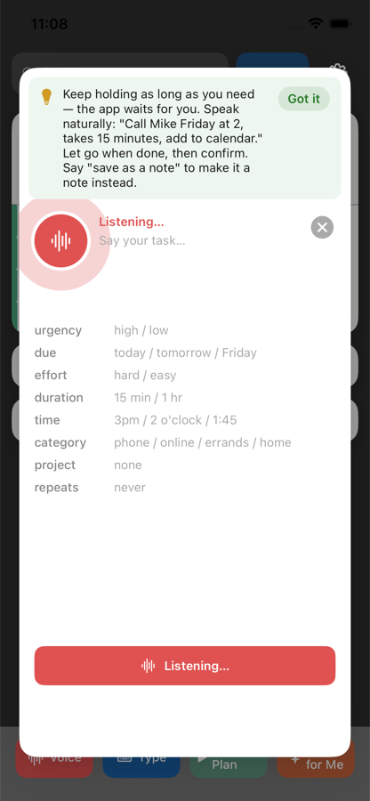
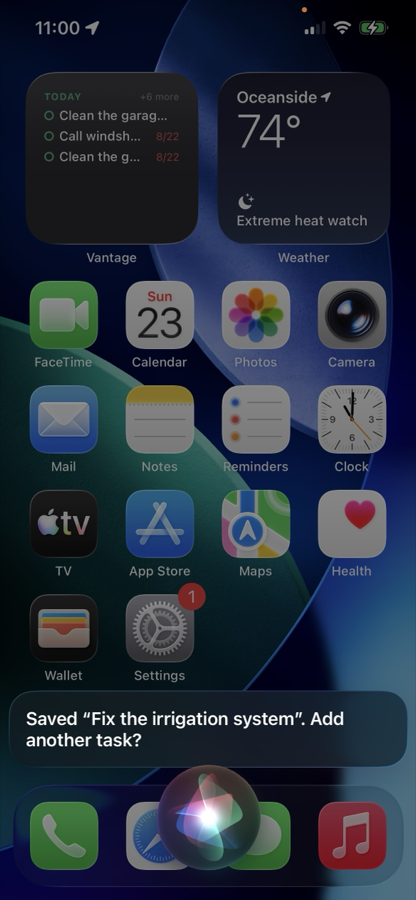
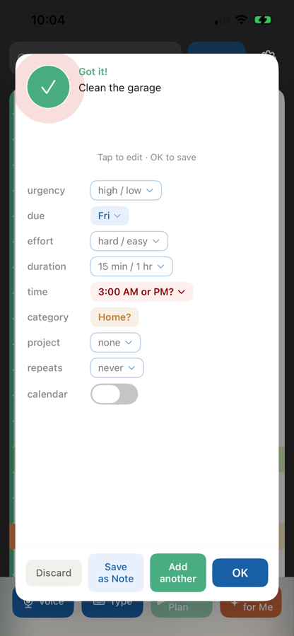
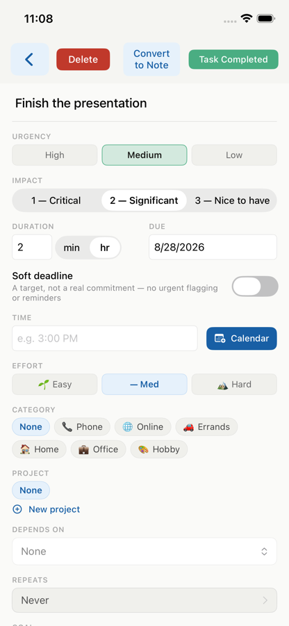
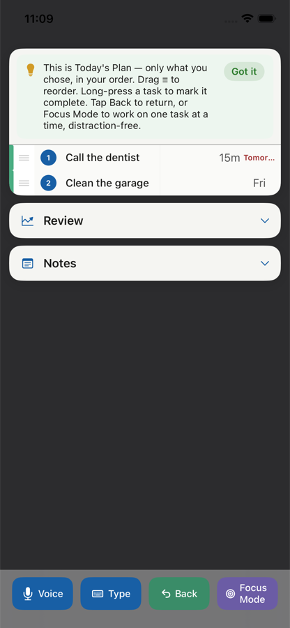
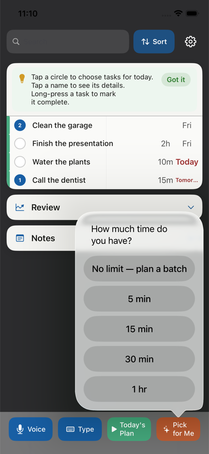
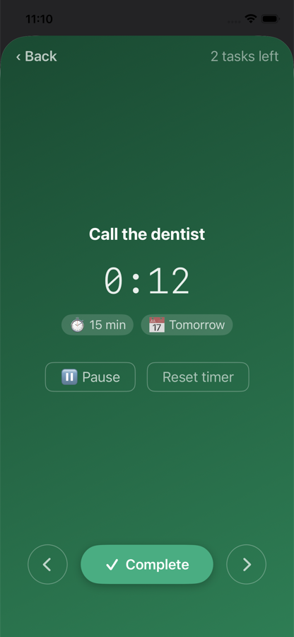

1 Add a Task
- Voice. Press and hold the Voice button while you speak the task name and any details you want to include. Take your time — Vantage will keep listening as long as you hold the button.
- When you release it, Vantage separates what you said into the task name, due date, urgency, duration, and other details it recognizes.

- Type. Tap Type and enter the task the same way you would say it aloud.
- Siri. You can also add one or more tasks without opening Vantage. Say “Hey Siri, add a task in Vantage.” Siri asks “What’s the task?” — speak naturally, and Siri repeats what it heard and asks whether you want to add another. Say yes to keep going or no when you are finished.
- The next time you open Vantage, it processes what you said and creates regular tasks. If Vantage needs clarification, it will ask you then.

2 Check the Details
- After Voice or Type entry, Vantage shows a confirmation screen.
- Guessed details. Anything shown in amber with a “?” is Vantage’s best guess. Tap it to confirm or change it. Confirmed fields turn blue.

- You can also turn on Calendar if you want a task with a date or time added to your calendar.
- After saving a task, tap its name whenever you want to see or edit its details.
-
You do not need to fill in every field. Use the ones that are
helpful. A few useful examples:
- Duration. Add an estimated duration so you can later find tasks that fit the time you have available.
- Depends on. Keeps a task hidden until another task is completed.
- Repeating tasks. Brings a recurring task back before it is due again.
- There are more options in Task Details. You can learn those as you need them.

3 Plan What to Do
- You do not have to look at your entire task list all day.
- Today’s Plan. Tap the circles beside the tasks you want to work on today, then tap Today’s Plan. Vantage hides the other tasks so you can concentrate on the ones you selected.

- You can also sort your list by things such as duration, due date, project, or difficulty to help decide what fits your day.
- Pick for Me. If you do not want to choose task by task, tell Vantage how much time you have. Vantage will suggest a group of tasks based mostly on urgency and due date. You can accept the list or change it.

4 Focus and Finish
- Focus Mode. When you’re ready to just do the work, Focus Mode shows one task at a time so nothing else competes for your attention.
- It can show the task’s estimated duration, due date, and a timer. You can pause or reset the timer, and move to the next or previous task. The timer pauses automatically when you move away from a task.

- Complete a task. Press and hold a task in the main list, or tap Complete in Focus Mode.
- Completed tasks are kept in Review so you can look back at what you have done.
And there’s more
Notes, Review, goals, projects, recurring tasks, subtasks, backups, and everything else are covered in How to Use Vantage, inside the app under Settings → Help.